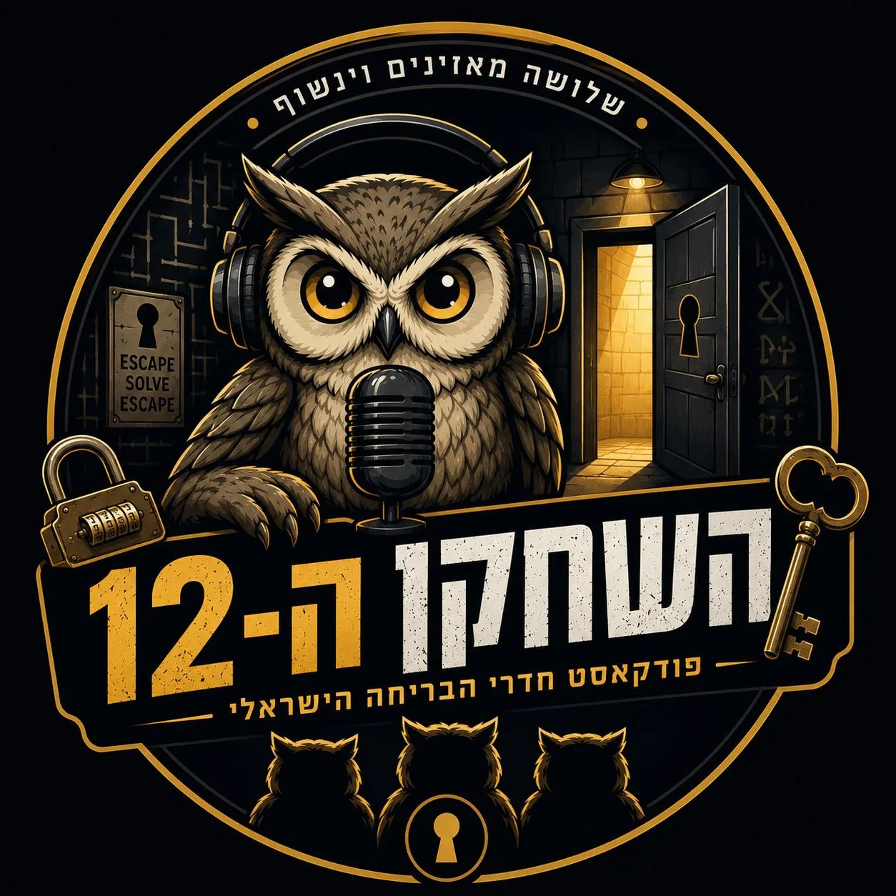
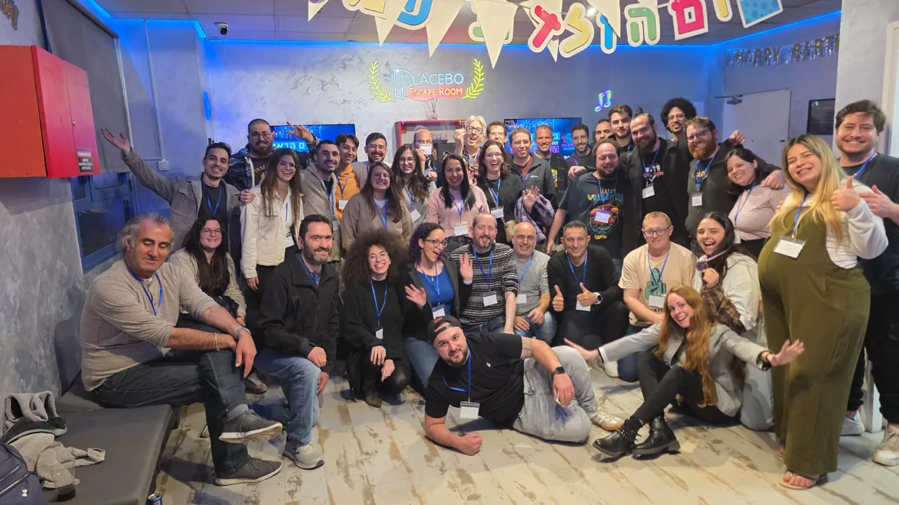
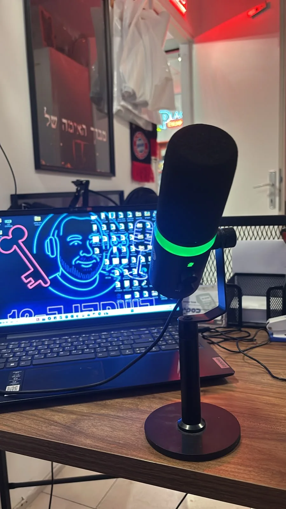
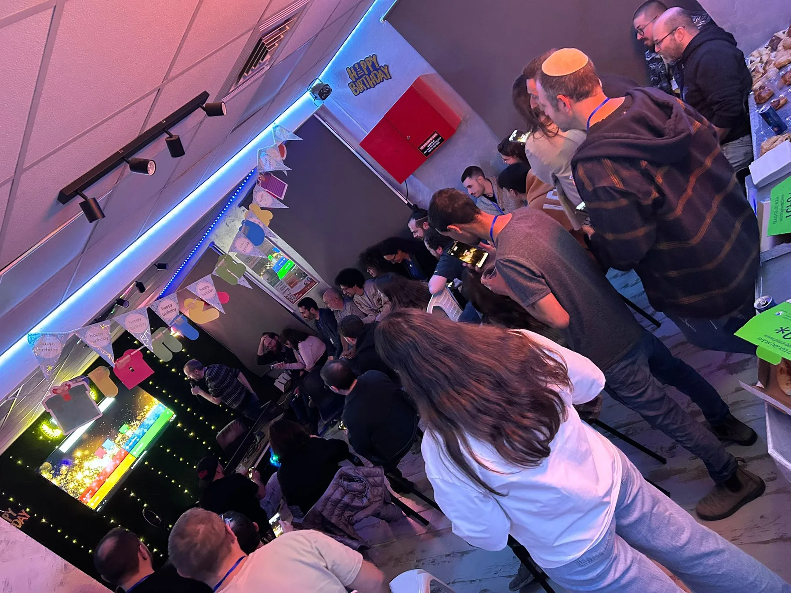
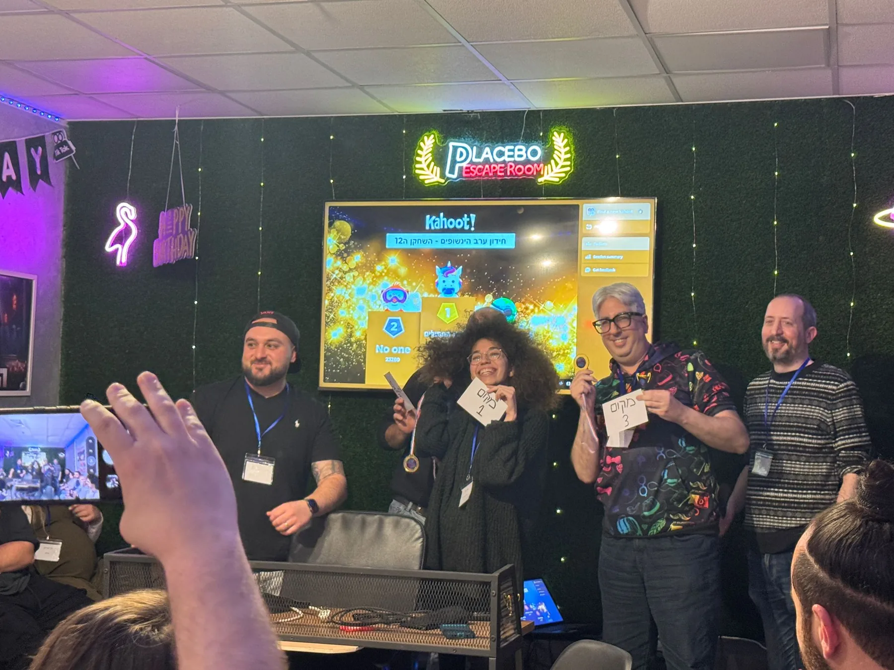
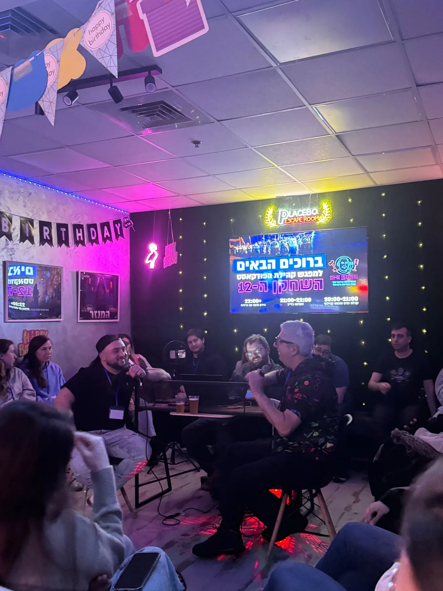
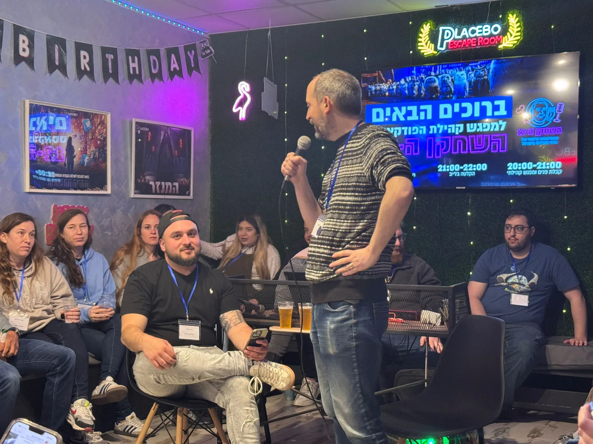
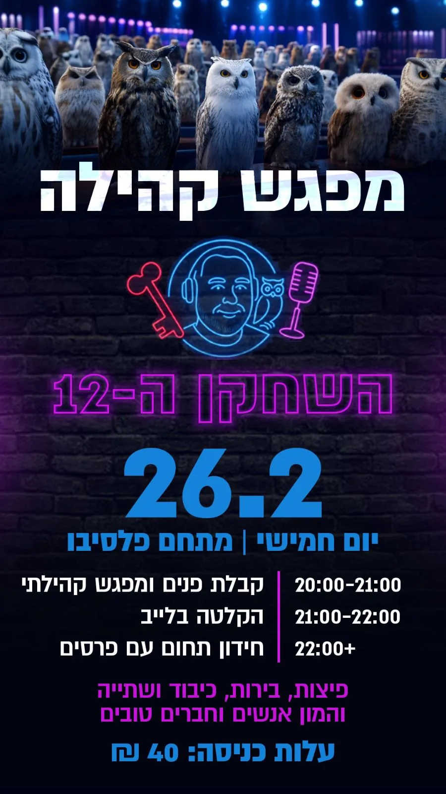

השחקן ה־12
שיחות על כל מה שקורה בתוך חדרי הבריחה ומאחורי הקלעים — עם בעלי חדרים, מפעילים, יוצרים, אסקייפרים ואנשים שחיים את התחום.

כל מה שקורה בעולם חדרי הבריחה
לא רק ביקורות על חדרים. השיחות נכנסות לעומק של התחום — האנשים, היצירה, העבודה, הקהילה והחוויות שאי אפשר להסביר למי שעוד לא התמכר.
בעלי חדרים, מפעילים והסיפורים שלא שומעים בזמן התדריך.
איך רעיון הופך לחדר, חידה, תפאורה וחוויה שלמה.
מרתונים, נסיעות לחו״ל וחדרים ששווה לטוס בשבילם.
אנשים, דעות, סיפורים ומה שקורה בתחום עכשיו.
פרקים שכדאי לפתוח מהם
כמה טעימות מהשיחות של השחקן ה־12. לכל הפרקים אפשר להמשיך ישירות ב-Spotify.
קהילה שנפגשת גם מחוץ לאוזניות

כשהמאזינים נפגשים באמת
מפגשי קהילה, הקלטות מול קהל, שיחות, משחקים והרבה אנשים שחיים ונושמים חדרי בריחה.






גיא משה
השחקן ה־12 מובל על ידי גיא משה, מבעלי Placebo Escape Room ואדם שחי את עולם חדרי הבריחה. דרך השיחות עם האנשים שמעצבים את התחום, הפודקאסט פותח את הדלת גם למה שלא רואים כשנכנסים למשחק של 60 דקות.
זה המקום לדבר על הצלחות, טעויות, בנייה, הפעלה, קהילה — וגם פשוט על האהבה המוגזמת שלנו לחדרי בריחה.